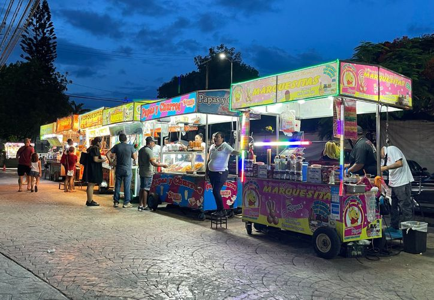
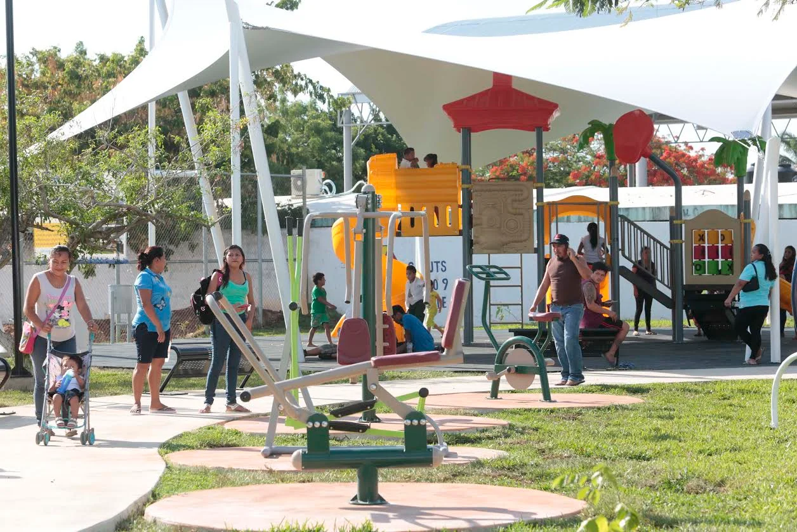
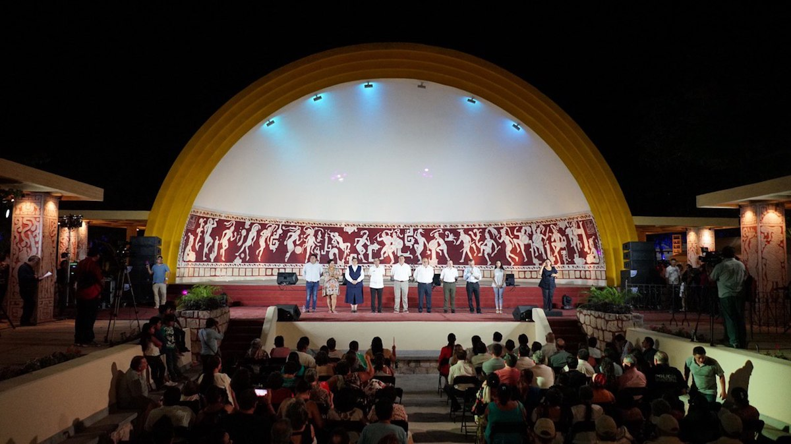

Traditional Food
Visitors can enjoy local snacks such as elotes, marquesitas, hot dogs, chicharrones, esquites, and traditional Yucatecan treats sold by local vendors around the park.

Kids Game Park
The park includes a large playground area where children can play, run, and enjoy family-friendly outdoor activities in a safe space.

Cultural Events — Concha Acústica
The Concha Acústica hosts cultural performances including music, dance, theater, and community celebrations that showcase Mérida’s rich artistic traditions.
